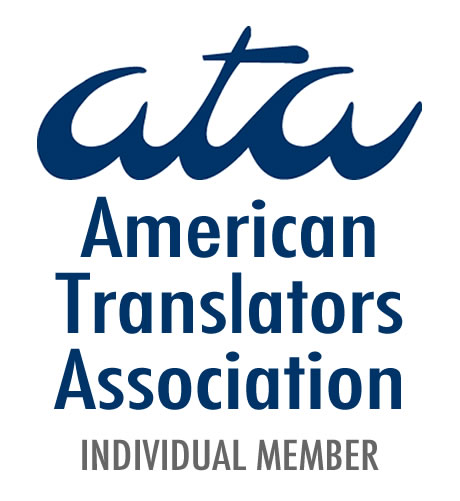

I have been providing interpreting and translation services since 1995.
With Over 25 years of experience as Hebrew translator and interpreter, i've earned an
international reputation for quality, service and reliability.
Serving customers in the private and public sectors, ranging from law firms, translation and interpreting agencies, federal agencies,
and the film industry to localization companies and translation agencies.
With a law degree (L.L.B.) from Hebrew University of Jerusalem and a Juris Doctorate degree (J.D.) from the
University of Denver
I'm able to provide a high-quality translation and interpreting and world-class customer service.
I'm based in Los Angeles, California, but continue to provide language services to clients worldwide.
I am a registered Hebrew-English interpreter in good standing with the Judicial Council of California,
as well as an active member of the American Translators Association.
